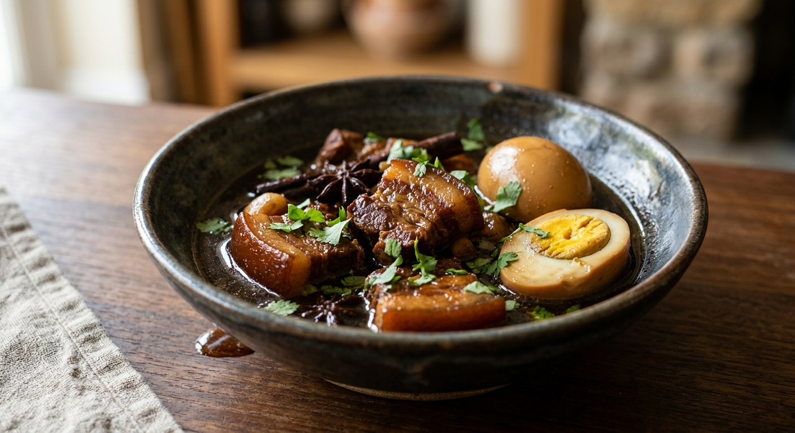

Pork belly and eggs braised in a sweet five-spice soy stew — palm sugar caramelised until it goes dark, then star anise, cinnamon and a long, quiet simmer. The eggs give the dish its name.

พะโล้ is the Thai form of a Chinese braise — the five-spice, sweet-soy technique that came to Bangkok with Teochew and Hokkien cooks and settled into every rice-and-curry shop in the country. The meat can be anything: pork belly, pork leg, chicken, tofu. But the dish is always called ไข่พะโล้, eggs in phalo, because the eggs are the part nobody skips.
It is a home dish before it is a shop dish. Wongnai cook GopOpOp learned it from her mother, who made it for temple merit events — peeled eggs must be flawless when they go to the monks, and she jokes that of a hundred eggs sent, ninety-five came back looking presentable. The same recipe note appears in every source: make it today, eat it tomorrow. It reheats better than it was, and cold phalo sets into a dark jelly you can portion straight from the fridge.
The flavour is sweet-led but deep. Kapook's version describes it as หวานนำ — sweetness first — built on caramelised palm sugar, with the salt of soy and the warmth of star anise and cinnamon behind it. Aroifin's recipe promises the whole point: spoon the dark broth over hot rice.
| Thai | English | Amount |
|---|---|---|
| ไข่ไก่ | Eggs, boiled and peeled | 10 |
| หมูสามชั้น | Pork belly, cut 1.5 cm thick | 500 g |
| สามเกลอ | Coriander root, garlic and peppercorn paste | 30 g |
| โป๊ยกั๊ก | Star anise | 8 g |
| อบเชย | Cinnamon sticks | 5 g |
| น้ำตาลปี๊บ | Palm sugar | 150 g |
| น้ำปลา | Fish sauce | 50 g |
| ซีอิ้วดำ | Dark soy sauce | 20 g |
| น้ำเปล่า | Water | 1.5 l |
| น้ำมันพืช | Vegetable oil | 50 g |
| ผักชี | Coriander leaves, to finish | a handful |
The TrueID pot: the same build — 600 g pork belly, ten eggs, palm sugar caramel — but with coconut flower sugar (น้ำตาลโตนด) as an option and the note that palm sugar runs sweeter, plus fried firm tofu in the pot. The Wongnai pots: Nickktwf's dorm-room version swaps the whole spices for a ready-made phalo spice packet and 6 tbsp palm sugar, simmering a full hour and a half; GopOpOp's salty temple version works with 10 coriander roots, oyster sauce instead of fish sauce, Sichuan pepper alongside the star anise, and fried tofu at the end. The Kapook quick pot: no powder, no fuss — chicken wings, two cinnamon sticks, star anise to taste, and light soy, ready in half an hour.
Powder or whole spices. Kapook Creator and Wongnai's Nickktwf reach for a packet of ผงพะโล้, the ready-made five-spice powder. Kapook's quick recipe, GopOpOp, TrueID and Aroifin all use whole spices — star anise and cinnamon toasted in the pot — and GopOpOp says the packet version never smells as good as pounding your own. Nickktwf concedes the same after trying a shop-bought spice sachet.
When the sugar goes in. Aroifin, TrueID and Nickktwf caramelise the palm sugar first, before the meat, so the pork fries in the caramel. GopOpOp holds the palm sugar back until the pork is already tender — her reasoning: sugar added early seals the surface of the meat, the sauce coats but never soaks in, and the pork stays firm instead of melting. Two schools, same ingredient, opposite order.
The salty base. TrueID and Aroifin season with fish sauce. GopOpOp's temple pot uses oyster sauce. Kapook Creator and Nickktwf use the bottled seasoning sauce every Thai kitchen knows (sauce with the green cap), and Kapook's quick recipe relies on light soy with fish sauce as an optional extra. The braise forgives all four.
The sweetener. TrueID offers coconut flower sugar in place of palm sugar, with the warning that palm sugar runs sweeter. Everyone else simply uses palm sugar, in wildly different amounts — one tablespoon (Kapook Creator) to six (Nickktwf) to 150 g for a family pot (Aroifin).
The protein. Pork belly is the default, but Kapook's quick recipe is built on chicken wings and notes the stew works with pork leg or tofu alone, and GopOpOp and TrueID both drop fried tofu into the pot as a second citizen. The only constant in every version: the eggs.
This recipe is translated from the following Thai-language sources. Where they disagree, we've said so.
1. Aroifin — "วิธีทำ ไข่พะโล้ หมูสามชั้น ตามแบบฉบับสูตรโบราณ ไม่ใส่ผงพะโล้" (the recipe used here) — aroifin.com
2. TrueID Food — "สูตร ไข่พะโล้โบราณ พะโล้ไทย วิธีแกงแบบไทยโบราณแท้" (the caramel method and the centred-yolk egg technique) — food.trueid.net
3. Wongnai — "สูตร ไข่พะโล้หมูสามชั้น" by GopOpOp (the salty temple pot; oyster sauce, Sichuan pepper, sugar held until last) — wongnai.com
4. Wongnai — "สูตร ไข่พะโล้หมูสามชั้น" by Nickktwf (the phalo-powder pot; make today, eat tomorrow) — wongnai.com
5. Kapook Cooking — "ไข่พะโล้ง่าย ๆ ไม่ใส่ผงพะโล้ หวานหอมกลมกล่อมฉบับเร่งด่วน" (the half-hour chicken-wing pot) — cooking.kapook.com
6. Kapook Creator — "ไข่พะโล้หมูสามชั้น สูตรใส่ผงพะโล้ อร่อยง่ายหวานกลมกล่อม" (the charcoal-simmered powder version) — creator.kapook.com